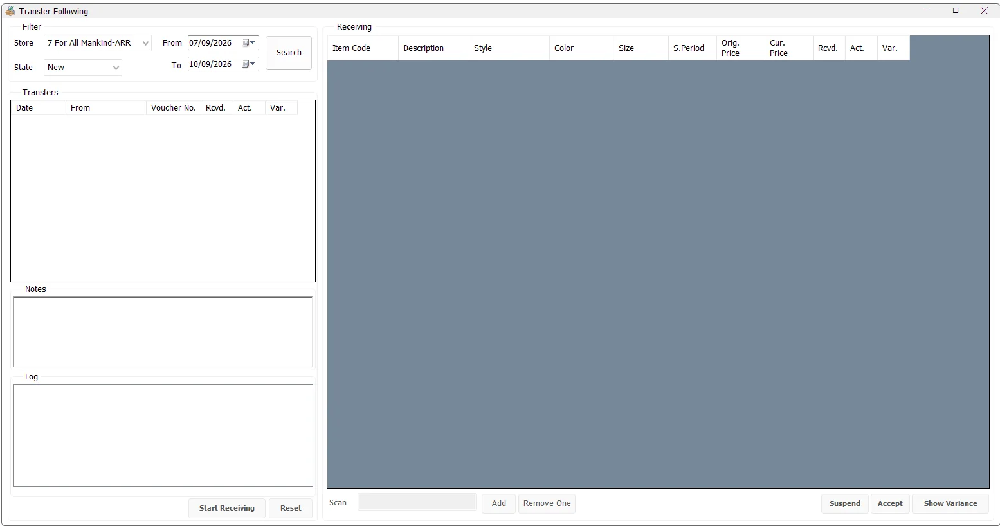

Transfer Following
Transfer Following is the receiving and reconciliation screen for Stock Transfer vouchers. The receiving store selects an incoming transfer, scans the physical items actually received, compares actual quantities with the quantities sent, records notes and activity, and then accepts the transfer or reviews a variance report.

Find incoming transfers
Select the receiving Store, choose a date range and select the required State, then click Search. By default, IMS opens the screen with approximately the last three days through the current server date.
| State | Meaning |
|---|---|
| New | The transfer has not yet entered the receiving process. |
| Pending | Receiving has started and actual scanned quantities have been recorded, but the transfer has not yet been accepted. |
| Finalized | The receiving process has been accepted/completed. |
Transfer list
The Transfers list shows incoming vouchers for the selected destination store and state. Its main columns are:
| Column | Meaning |
|---|---|
| Date | Transfer voucher date. |
| From | Store or warehouse that sent the transfer. |
| Voucher No. | Stock Transfer voucher number. |
| Rcvd. | Quantity recorded on the original transfer voucher. |
| Act. | Quantity physically counted/scanned during receiving. |
| Var. | Difference between Actual and transferred quantity. Positive values indicate extra received units; negative values indicate shortages. |
Selecting a voucher loads its item details, original transfer notes, receiving notes and its activity Log.
Notes and activity log
The Notes panel can show both the original Stock Transfer note and a receiving note. When receiving starts, the receiving note becomes editable. IMS saves the receiving note when the session is suspended or when the transfer is accepted.
The Log shows recorded activity for the voucher with the date/time, IMS user and action. Receiving events such as Start Receiving, Accepted and Reset Receiving are retained as part of the transaction history.
Start receiving
- Select the required incoming transfer.
- Click Start Receiving.
- IMS verifies that the voucher header quantity agrees with the total of its transferred item lines before opening the receiving session.
- Scan the physical items one by one into the Scan field. Press Enter or click Add.
- Review the Actual and Variance values while receiving.
What can be scanned
The Scan field accepts an IMS Item Code, the item's main Barcode, or an alternate barcode. IMS resolves the scan to the Item Code before updating the receiving count.
If the scanned item belongs to the transfer, its Actual quantity increases and its line variance is recalculated. IMS can also record an unexpected valid inventory item that was physically found in the shipment even though the original transfer quantity for that item was zero; this appears as an extra-item variance.
Receiving details
| Column | Meaning |
|---|---|
| Item Code / Description | Identifies the received SKU. |
| Style / Color / Size | Product variant information. |
| S.Period | Statistical/season period associated with the item or transfer line. |
| Orig. Price | Original item retail price. |
| Cur. Price | Current retail price recorded for the transfer line. |
| Rcvd. | Quantity expected from the transfer voucher. |
| Act. | Quantity physically counted during receiving. |
| Var. | Receiving discrepancy. Reloaded data calculates Actual quantity minus transferred quantity; verify the underlying counts after corrections. |
| MD Order | Online-order reference shown when the destination store is configured as an Online Store. |
Correct a scanning mistake
If one unit was scanned by mistake, select the item row and click Remove One. After confirmation, IMS reduces the Actual quantity by one. If that was the only actual unit recorded for the item, the receiving count entry is removed.
Review and print variances
Click Show Variance to focus on discrepancies. If a voucher or one of its item lines contains a non-zero variance, IMS hides the zero-variance lines and changes the action to Print Variance.
Print Variance prints the Stock Transfer variance/discrepancy report using the workstation's configured printer and copy count. If no discrepancies are present, IMS reports that no variance was found.
Suspend receiving
Suspend stops the current receiving session without finalizing the voucher. IMS keeps the scanned Actual quantities and any updated receiving note so the transfer can remain in the Pending state and be continued later.
Reset a pending receipt
Reset is available for a Pending transfer. After confirmation, IMS clears the stored receiving counts, returns Actual quantity to zero, removes the receiving note and returns the transfer to the New state. The reset is also written to the transaction log.
Accept the transfer
When physical receiving is complete, review the Actual quantities and any variance, then click Accept. IMS asks for confirmation and marks the transfer as Finalized. The receiving note is saved and an Accepted action is written to the log.
Relationship with Stock Transfer
Stock Transfer creates the outgoing voucher and moves the stock between the source and destination locations. Transfer Following provides the destination-side operational control: it verifies what physically arrived against the recorded voucher quantities and keeps a receiving history.